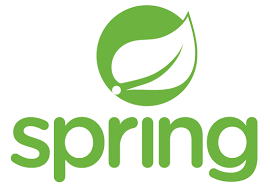
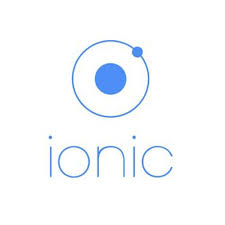

É um conjunto de códigos, que foram desenvolvidos em alguma linguagem e entregam funcionalidades especificas. Assim o desenvolvedor não precisa criar do zero, poupando tempo.
É um framework Java criado para facilitar o desenvolvimento de aplicações, usando conceitos de inversão de controle e injeção de dependências
É um framework criado para auxiliar na interação entre front e back end, sendo muito utilizado em projetos de página única para fazer a comunicação entre local/servidor.

É um framework conhecido para o desenvolvimento de CSS. Ele cuida do visual da página, adequando-a para dispositivos móveis ou desktops.

É utilizado para desenvolver aplicações hibridas, possui ferramentas que facilitam esse desenvolvimento. Tambem possui suporte a linguagens web(HTML, CSS, JavaScript).
É um framework com o intuito de facilitar a criação de UIs interativas, é baseado em componentes e utiliza JavaScript

A biblioteca é menos complexa que o framework, ela oferece funções ou métodos prontos, como por exemplo fazer cálculos, você so precisa chamar ela e não fazer toda a lógica do cálculo. O framework é um conjunto de códigos abstratos que fazem uma operação maior, com o intuito de reutilização de código, por exemplo uma tela de login, ao invés de ter que criar ela do zero, você pode usar um framework porque todas telas de login possuem usuário e senha e botão entrar.